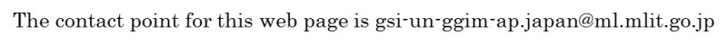

Sixth Plenary Meeting of UN-GGIM-AP
WG1 Workshop
UN-GGIM-AP WG1 Workshop
Regional Challenges, Benefits and Opportunities of Exchanging Geodetic Data
Final Agenda(10/12UP)
The facilitators of the meeting would like member countries to submit responses before 29 September 2017.
Please download a form from "Questionnaire" and send the filled one to:
Dr. John Dawson - John.Dawson@ga.gov.au
Mr. Basara Miyahara - miyahara-b96ip@mlit.go.jp
Mr. Rob Sarib - robert.sarib@nt.gov.au

Copyright © UN-GGIM-AP
Supported by:Geospatial Information Authority of Japan
GSI International Twitter
GSI International Facebook
This page was last updated 2017-10-12